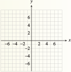

Chapter 7 Polynomial and Rational Functions
¶
The graphs of linear, quadratic, exponential and power functions all have a characteristic shape. But the graphs of polynomials have a huge variety of different shapes.
Ever since Gutenberg's invention of movable type in 1455, artists and printers have been interested in the design of pleasing and practical fonts. In 1525, Albrecht Durer published On the Just Shaping of Letters, which set forth a system of rules for the geometric construction of Roman capitals. The letters shown above are examples of Durer's font. Until the twentieth century, a ruler and compass were the only practical design tools, so straight lines and circular arcs were the only geometric objects that could be accurately reproduced.
With the advent of computers, complex curves and surfaces, such as the smooth contours of modern cars, can be defined precisely. In the 1960s the French automobile engineer Pierre Bézier developed a new design tool based on polynomials. Bézier curves are widely used today in all fields of design, from technical plans and blueprints to the most creative artistic projects. Many computer drawing programs and printer languages use quadratic and cubic Bézier curves.

Investigation 7.0.1. Bézier Curves.
A Bézier curve is actually a sequence of short curves pieced together. Each piece has two endpoints and (for nonlinear curves) at least one control point. The control points do not lie on the curve itself, but they determine its shape. Two polynomials define the curve, one for the \(x\)-coordinate and one for the \(y\)-coordinate.
-
Linear Bézier Curves
The linear Bézier curve for two endpoints, \((x_1, y_1)\) and \((x_2, y_2)\text{,}\) is the straight line segment joining those two points. The curve is defined by the two functions
\begin{equation*} \begin{aligned}[t] x \amp= f(t) = x_1\cdot (1 - t) + x_2\cdot t \\ y \amp = g(t) = y_1 \cdot (1 - t) + y_2 \cdot t \end{aligned} \end{equation*}for \(0\le t\le 1\text{.}\)
Find the functions \(f\) and \(g\) defining the linear Bézier curve joining the two points \((-4, 7)\) and \((2, 0)\text{.}\) Simplify the formulas defining each function.
-
Fill in the table of values and plot the curve.
\(t\) \(0\) \(0.25\) \(0.5\) \(0.75\) \(1\) \(x\) \(\hphantom{000}\) \(\hphantom{000}\) \(\hphantom{000}\) \(\hphantom{000}\) \(\hphantom{000}\) \(y\) \(\) \(\) \(\) \(\) \(\)
 -
Quadratic Bézier Curves: Drawing a Simple Numeral 7
The quadratic Bézier curve is defined by two endpoints, \((x_1, y_1)\) and \((x_3, y_3)\text{,}\) and a control point, \((x_2, y_2)\text{.}\)
\begin{equation*} \begin{aligned}[t] x \amp= f(t)=x_1\cdot(1 - t)^2+2x_2\cdot t (1 - t) + x_3\cdot t^2 \\ y \amp = g(t)= y_1\cdot(1 - t)^2 +2y_2\cdot t (1 - t) + y_3 \cdot t^2 \end{aligned} \end{equation*}for \(0\le t\le 1\text{.}\)
Find the functions \(f\) and \(g\) for the quadratic Bézier curve defined by the endpoints \((-4, 7)\) and \((2, 0)\text{,}\) and the control point \((0, 5)\text{.}\) Simplify the formulas defining each function.
-
Fill in the table of values and plot the curve.
\(t\) \(0\) \(0.25\) \(0.5\) \(0.75\) \(1\) \(x\) \(\hphantom{000}\) \(\hphantom{000}\) \(\hphantom{000}\) \(\hphantom{000}\) \(\hphantom{000}\) \(y\) \(\) \(\) \(\) \(\) \(\) Draw a line segment from \((-4, 7)\) to \((4, 7)\) on the grid above to complete the numeral 7.
We can adjust the curvature of the diagonal stroke of the 7 by moving the control point. Find the functions \(f\) and \(g\) for the quadratic Bézier curve defined by the endpoints \((4, 7)\) and \((0,-7)\text{,}\) and the control point \((0,-3)\text{.}\) Simplify the formulas defining each function.
-
Fill in the table of values and plot the curve.
\(t\) \(0\) \(0.25\) \(0.5\) \(0.75\) \(1\) \(x\) \(\hphantom{000}\) \(\hphantom{000}\) \(\hphantom{000}\) \(\hphantom{000}\) \(\hphantom{000}\) \(y\) \(\) \(\) \(\) \(\) \(\) Draw a line segment from \((-4, 7)\) to \((4, 7)\) on the grid above to complete the numeral 7.
On your graphs in steps B.3 and B.6, plot the three points that defined the curved section of the numeral 7, then connect them in order with line segments. How does the position of the control point change the curve?
-
Cubic Bézier Curves: Drawing a Letter y
A cubic Bézier curve is defined by two endpoints, \((x_1, y_1)\) and \((x_4, y_4)\text{,}\) and two control points, \((x_2, y_2)\) and \((x_3, y_3)\text{.}\)
\begin{equation*} \begin{aligned}[t] x \amp= f(t) = x_1\cdot (1 - t)^2 +3x_2\cdot t(1 - t)^2 +3x_3\cdot t^2(1 - t) + x_4\cdot t^3\\ y \amp = g(t) = y_1\cdot (1 - t)^2 +3y_2\cdot t(1 - t)^2 +3y_3\cdot t^2(1 - t) + y_4 \cdot t^3 \end{aligned} \end{equation*}for \(0\le t \le 1\text{.}\)
Find the functions \(f\) and \(g\) for the cubic Bézier curve defined by the endpoints \((4, 7)\) and \((-4,-5)\text{,}\) and the control points \((3, 3)\) and \((0,-8)\text{.}\) Simplify the formulas defining each function.
-
Fill in the table of values and plot the curve.
\(t\) \(0\) \(0.25\) \(0.5\) \(0.75\) \(1\) \(x\) \(\hphantom{000}\) \(\hphantom{000}\) \(\hphantom{000}\) \(\hphantom{000}\) \(\hphantom{000}\) \(y\) \(\) \(\) \(\) \(\) \(\) Connect the four given points in order using three line segments. How does the position of the control points affect the curve? Finish the letter y by including the linear Bézier curve you drew for step A.2.